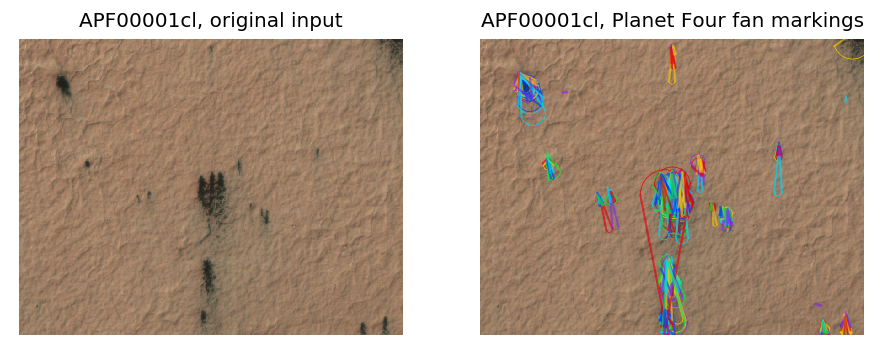
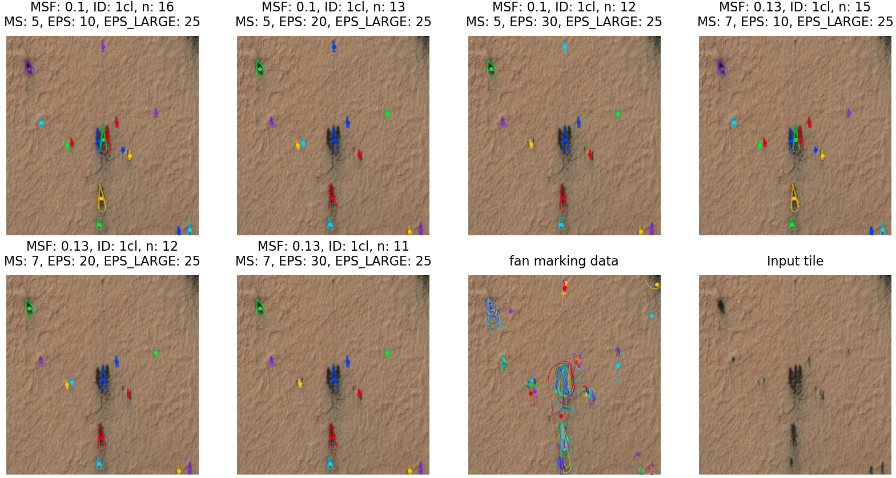
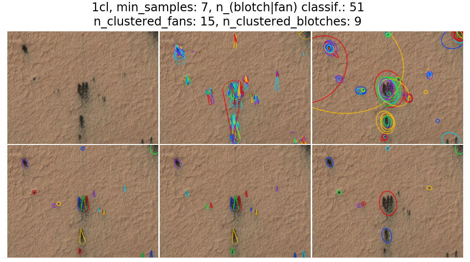
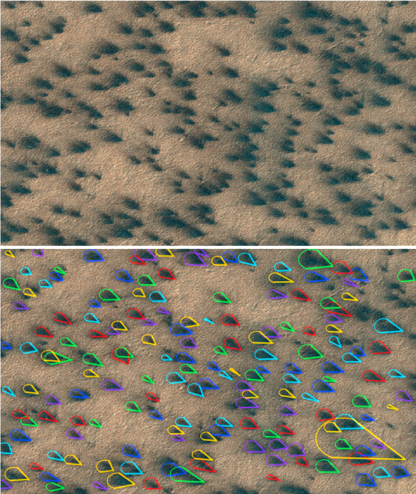
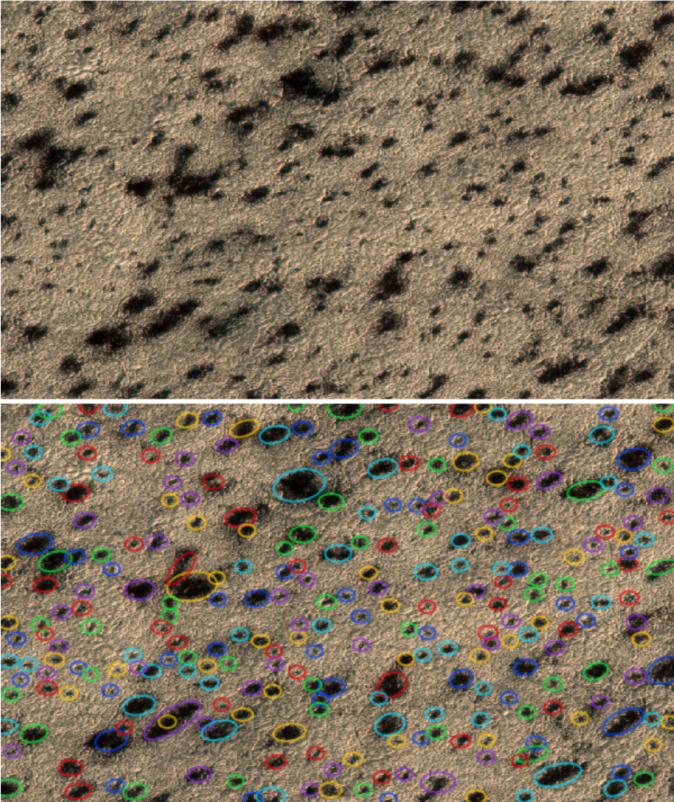
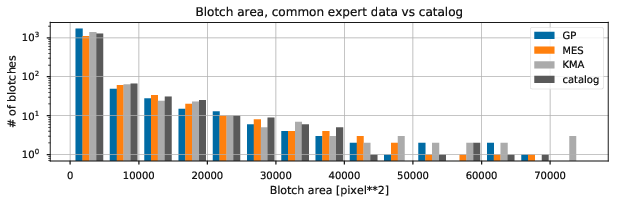
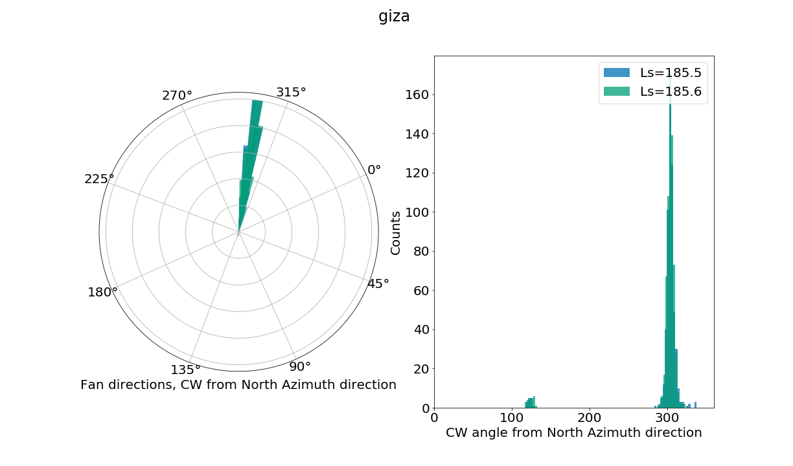
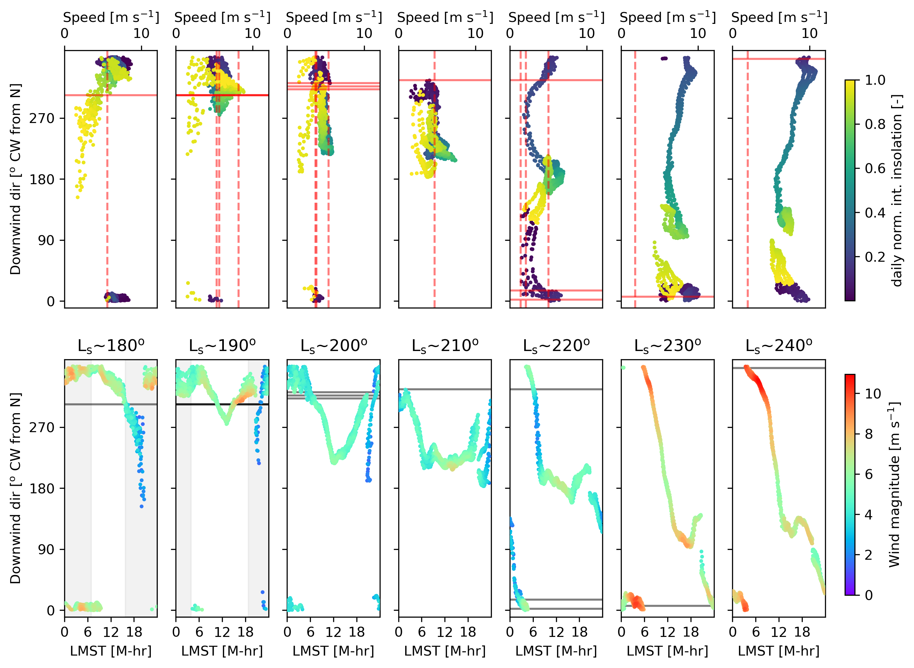
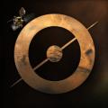

Planetary Research with Citizen Science
2022-10-27
What is Citizen Science (CS)?
Political answer (Quotes EU Horizon monthly focus)
- “Through citizen science, ordinary people can take part in extraordinary research.”
- “Through their contributions, the citizen scientist can actively pursue personal values, and be part of a research community seeking the same goals.”
“The professional scientist can get more data than they would otherwise. This leads to better precision in their measurements and more lines of enquiry in their research.”
- “Environmental monitoring is a particularly active field of citizen science.”
- “Scientists naturally want to measure the effects of citizen science and its impact on society […]” (Meta-CS)
What is CS, practically?
- Problem: Simple, but arduous or repetitive task
- too much data to go through yourself
- Split up the task into screen-sized subtasks
- Present the data with a simple workflow to thousands of untrained volunteers
What is in it for scientists?
- amount of data grows exponentially
- ideal for simple but arduous questions
- ML: labeled data always better
- CS is an efficient way to create many labels
- good outreach opportunity
What is in it for citizens?
- participate in real science
- independent of prior education!
- wide variety of research fields offered as CS now
Recognition of the field (US)
- https://science.nasa.gov/citizenscience
- Seed funding available through standard NASA funding programs
- Can be attached to larger project applications
Recognition of the field (EU)
EU Horizon monthly focus and semi-regularly CS news
https://ec.europa.eu/research-and-innovation/en/horizon-magazine/citizen-science-science-and-people
How did it start (really)
- Zooniverse really took off with “GalaxyZoo”
- Dozens of papers before planetary even started
- Galaxy shape distributions needed
redefinition!
Planet Four project
Science case
Science case temporal
Science case: Kieffer model

- Jet deposits are aligned by prevalent winds at the time!
- Mapping these features would be more wind data than we ever had on Mars!
Active areas around south pole

- Seasonal campaigns at most of these areas!
- -> Lots of huge HiRISE image data
Input data
- 221 HiRISE images from MY 29/30
- split up into over 40,000 image screen-sized tiles
- Tiles are being “anonymized”, to prevent bias
- The data input and reduction pipelines need to track everything
Interface
Interface return

Difficulty: What (contrast) defines the “end” of a surface feature?
Minimum of 30 different volunteers per image tile!
=> quite slow progress
Reduction pipeline

Comprehensive description in Aye et al. (2019) : “Planet Four: Probing springtime winds on Mars by mapping the southern polar CO2 jet deposits”
Reduction pipeline 2

Clockwise from upper left: 1) Raw, 2) Fan markings, 3) Blotch markings, 4) Blotch reduction, 5) Fan reduction, 6) catalog entry with 50% majority vote
Catalog entries


Science Team (Gold) markings
- Each team member marked several hundred tiles
- Significant differences between science team members
- Years of experience do not overcome the original contrast problem!
Compare experts with citizens

Results
- Over 40,000 citizens have contributed
- Most only once
- Core team of approx 10-20 volunteers did most of the work
- ca. 400,000 geo-located objects in catalog
- available at https://www.zooniverse.org/projects/mschwamb/planet-four/about/results
What can be done with it?

Portyankina et al. (2022) “Planet Four: Derived South Polar Martian Winds Interpreted Using Mesoscale Modeling”
Compare with climate models
- Team member Tim Michaels nest GCM into high-res meso-scale models using CTX and HiRISE DTM topography
- Run for several days to avoid “spin-up” effects
- Run at different \(L_s\) over the season
- Compare wind predictions with Planet Four data
- Just published in Portyankina et al. (2022)

Measure of success
- Define status of good / average / bad fit with data
- Using only direction very good match with climate models
- Taking into account wind strength as well less good
- Our assumptions for jet deposit <-> wind strength are too simple
Only wind directions
Wind directions and estimated strengths
Conclusions
- Citizen Science is not only outreach
- Scientific paradigms are being changed thanks to the work power of hundred thousands of citizen scientists all over the world
- If data reduction is done carefully, the results are very reliable
- Don’t try to do this “on the side”
- It’s a full time analytical job
Conclusions 2
- Overall good match with models but discrepancies exist
- Hope to derive jet eruption times
References

Michael Aye, Planetary Seminar at Freie Uni Berlin, 2022-10-27